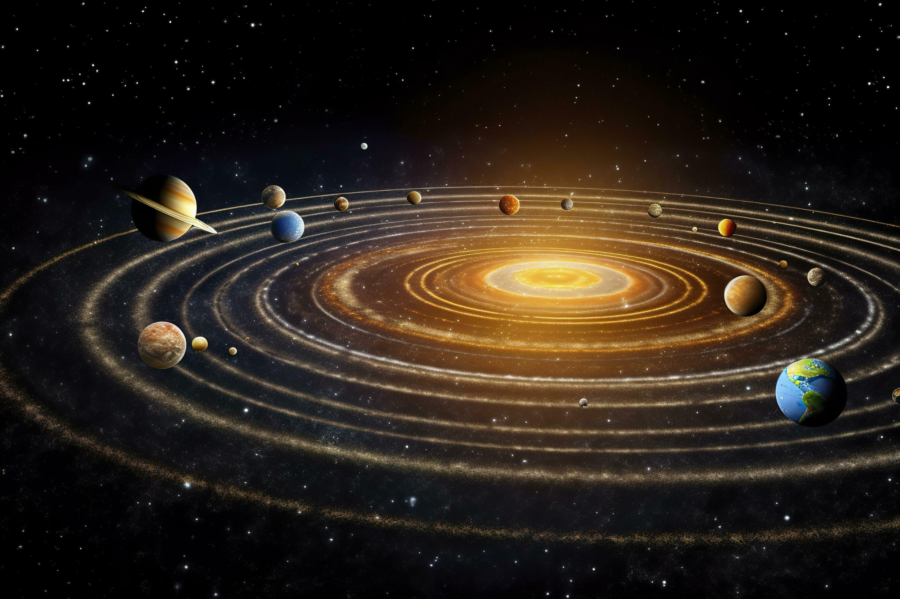

A planet is a large, celestial body which is round in shape and it orbits around a star.
These are basic set of conditions in which a celestial body needs to follow in-order to be a planet.
Types of planets:
1. Rocky planets
These are made of solid rock and metal. They are smaller and closer to the Sun.
Examples: Mercury, Venus, Earth, Mars
2. Gas giants
These are much larger and made mostly of gases like hydrogen and helium.
Examples: Jupiter, Saturn, Uranus, Neptune.
Other than these, there are more types which are used by scientists and astronmers to classify the categories of planets and to better understand them.
3.Ice Giants
- Similar to gas giants but with more icy materials like water and methane
- Examples: Uranus, Neptune
4. Dwarf Planets
- Small, round objects that orbit the Sun but haven’t cleared their path of other space stuff
- Examples: Pluto, Ceres, Eris
5. Rogue Planets
- Planets that don’t orbit any star — they float alone in space
- They may have been kicked out of their solar system
6. Exoplanets
- Planets outside our solar system
- Thousands have been found around other stars
7. Super-Earths and Mega-Earths
- Bigger than Earth but smaller than gas giants
- May be rocky or have thick atmospheres
8. Hot Jupiters
- Gas giants that orbit very close to their star
- Extremely hot and fast-moving
These types help scientists understand how planets form and behave in different parts of the universe. Let me know if you want to turn this into a webpage section or add visuals for each type.
How planets move:
- Planets orbit (go around) a star.
- They also spin on their own axis, which causes day and night.

Interesting facts:
- Earth is the only planet known to support life.
- Jupiter is the biggest planet in our solar system.
- Venus is the hottest planet, even though Mercury is closer to the Sun.
- Uranus spins on its side, unlike the other planets.
*Some of the parts of the website is inspired by NASA's official website*
Designing ideas credit goes to NASA (Respect!)